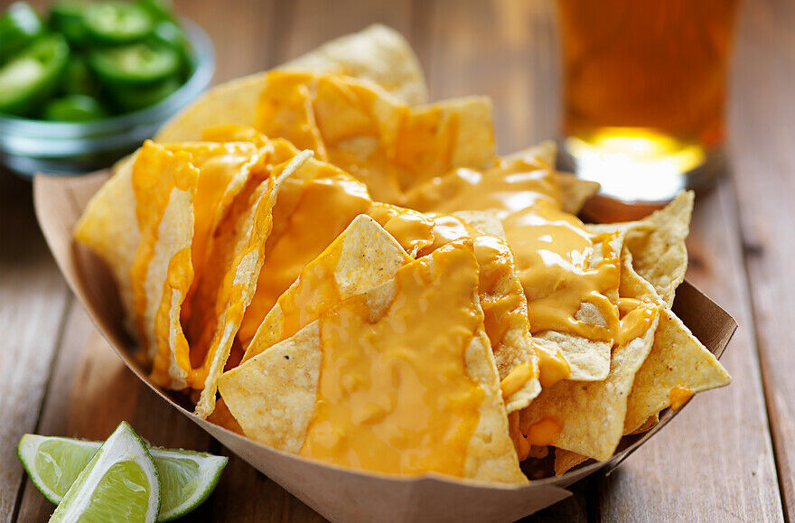

Nachos & Cheese

Description:
Another time and wallet friendly option, is Nachos & Cheese in the Microwave. Quick and simple best describe this dish. A pile of tortillas covered in melted shredded cheese.
Pro-Tip:
For a more gourmet option, cheese dip and a mixed shredded cheese can elevate the nachos. Blue corn and hint-of-lime chips can crank it up a notch. If you are feeling a little adventurous, Nacho Cheese Doritos will send your tastebuds to the moon.
Ingredients:
- 1 - Bag of Tortilla Chips
- 1 - Bag of Shredded Sharp Cheese
Instructions:
- Pile tortillas on a microwave safe plate. (Paper plates work just as well, but you may have to double up.)
- Top pile of tortillas with a healty portion of shredded cheese.
- Add more cheese to cover tortillas properly.
- Cook in microwave for 1 min. Add an additional 30 secs to melt the cheese.
- Carefully remove from microwave and serve.
Home